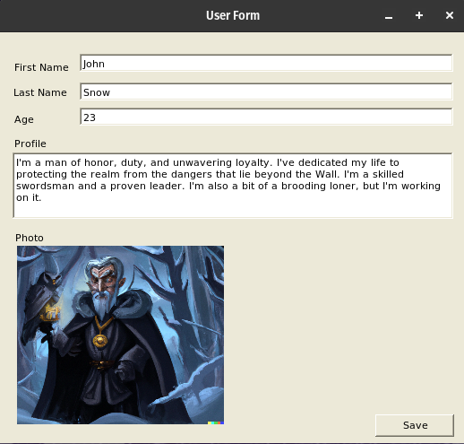

2023 11 28 dotnet development
C# developers can use Pop!_OS to develop .NET web applications and console applications without any limitations. However, using Pop!_OS to develop applications with legacy versions of the .NET Framework and frontend technologies like ASP.NET Web Forms, ASP.NET MVC, Windows Forms, and WPF is not supported and may result in limited functionality.
Note: I successfully followed these instructions on Ubuntu 22.04 LTS as well.
Introduction¶
Skill level required: Junior to Intermediate Developer
Upon completing this guide, your Pop!_OS installation will be equipped to develop and execute cross-platform .NET applications compatible with Windows, macOS, and other Linux distributions.
This guide is intended for C# developers with familiarity of the terminal CLI environment.
Installing .Net SDK and Runtimes¶
I recommend using the script-installation method for .NET installation on Pop!_OS. This recommendation comes from the tendency of apt sources to lag behind the official release schedule. For instance, if you wanted to develop a .NET 8 application, its SDK was released just two weeks ago at the time of writing this article, however, it's not available yet via the apt tool. This recommendation aligns with Microsoft's guidelines for .NET installation on Linux.
I have based the section of my guide from Microsoft's documentation on installing .Net on Linux https://learn.microsoft.com/en-us/dotnet/core/install/linux-scripted-manual#scripted-install
Download installation tool (dotnet-install.sh) and change it to an executable.
wget https://dot.net/v1/dotnet-install.sh -O dotnet-install.sh
chmod +x ./dotnet-install.shNext you'll want to install the .Net SDK
./dotnet-install.sh --channel 8.0If you are creating a console application you'll want to install the standard runtime
./dotnet-install.sh --runtime dotnet --version 8.0.0If you are creating a web application or web api application you'll want to install the aspnetcore runtime.
./dotnet-install.sh --runtime aspnetcore --version 8.0.0Add the dotnet executable and globally installed dotnet tools to the path for
all users/accounts. This will allow you to run dotnet from the terminal from
any location on the machine
echo "export DOTNET_ROOT=$HOME/.dotnet" | sudo tee /etc/profile.d/dotnet.sh
echo 'export PATH=$PATH:$DOTNET_ROOT:$DOTNET_ROOT/tools' | sudo tee --append /etc/profile.d/dotnet.shYou'll need to log out and log in again for this to take effect or restart your computer.
To check that .Net is accessible from your current user, run the following
which dotnet
# should return '/home/your-user-name/.dotnet/dotnet'To check that .Net is accessible to your root (administrator) user, run the following
sudo -i
which dotnet
# should also return '/home/your-user-name/.dotnet/dotnet'
exit # exit out of the root accountInstalling Older Unsupported .Net Core SDKs and Runtimes¶
In specific situations, installing an older version of the SDK or Runtimes may be necessary:
-
Running older .NET Core applications: If you encounter an older .NET Core application, such as one built for .NET Core 2.1 or 3.1, installing the corresponding SDK or Runtime version is required for proper execution.
-
Upgrading legacy .NET applications: When upgrading an application from an older .NET version, it's advisable to follow an incremental approach, transitioning one LTS (Long-Term Support) version at a time. This ensures compatibility and minimizes potential issues.
Using one of the scripts below, we can install an older version of the .Net SDK
./dotnet-install.sh --channel 3.1 # installs .NET Core 3.1 SDK
./dotnet-install.sh --channel 2.1 # installs .NET Core 2.1 SDKRunning one of the scripts below, we can install a .Net Core 3.1 legacy version of the runtime or aspnetcore environment
./dotnet-install.sh --runtime dotnet --version 3.1.32 # installs the latest .Net Core 3.1 runtime
./dotnet-install.sh --runtime aspnetcore --version 3.1.32 # installs the latest .Net Core 3.1 runtimeSimilarly, you can install .Net Core 2.1 using the script below.
./dotnet-install.sh --runtime dotnet --version 2.1.30 # installs the latest .Net Core 2.1 runtime
./dotnet-install.sh --runtime aspnetcore --version 2.1.30 # installs the latest .Net Core 2.1 aspnetcore environmentRunning a test app¶
We're going to make a directory for our test app and move to that folder
mkdir TestApp
cd TestAppMake a console app. Note that old versions of .Net (2.1 and 3.1) might give you this error "No usable version of libssl was found" as soon as you try and create or run an application. See the Troubleshooting section below on fixing the libssl error
dotnet new consoleExecute the console app
dotnet run
# expected output Hello World!The IDE¶
Most developers don't develop apps from the command line (unless they like Vim, which I don't). The first IDE that we are going to install is Microsoft VSCode.
sudo apt install codeUpon opening your first .cs file, you'll be presented with a selection of recommended extensions for C# development. Proceed with installing these recommended extensions.
Next, launch your test application and set debugging breakpoints. Initiating debugging by pressing F5 will provide you with a basic yet functional C# development IDE.
At this point, you might find yourself yearning for a more comprehensive IDE than Microsoft VSCode, akin to Visual Studio. However, Visual Studio is not available for Linux, and attempting to run it through a compatibility layer like Wine is not recommended due to compatibility issues.
For a free option with enhanced features, you could consider MonoDevelop. However, please note that MonoDevelop is no longer actively supported.
Another option is Jetbrains Rider, a cross-platform IDE that is not free but boasts a comprehensive feature set. I've been using Rider for the past year and highly recommend it. Compared to Visual Studio's Professional and Enterprise editions, Rider is significantly more affordable. However, if you were previously using the Visual Studio Community Edition, Rider may be a more expensive alternative.
Now you might find yourself wanting with just Microsoft VSCode and missing a more fully featured IDE such as Visual Studio. Unfortunately, Visual Studio is not available on Linux at all, and I wouldn't recommend trying to run in a compatibility layer such as Wine as this doesn't work.
What about legacy .Net Framework applications?¶
Can you build and run an old .NET Framework 4.8 legacy application or older on Linux? Yes, but with limitations. You can utilize Mono Project, an open-source reverse-engineered version of the .NET Framework.
For maintaining legacy .NET Framework applications, the simplest solution is to use a virtual machine with Windows. However, I intend to investigate the possibility of running some legacy .NET Framework applications on Linux.
Attempting to run a Windows Forms application on Pop!_OS¶
To run WinForms applications on Pop!_OS, follow these steps.
Install Mono: Begin by installing Mono, the open-source implementation of the .NET Framework. Use the following command in your terminal:
sudo apt install mono-completeLaunch the WinForms Application: Once Mono is installed, you can launch your WinForms application using the following command:
mono name-of-your-application.exeHere is a small trivial C# .Net Framework application running in Pop!_OS

While running legacy .NET Framework applications on Linux using Mono is possible, there are some drawbacks to consider:
-
Appearance: The application's user interface may not integrate seamlessly with the native Linux environment, giving it a non-native look and feel.
-
Stability: While the application may function in Linux, it may exhibit unexpected crashes or instability compared to its performance in Windows.
-
Development Limitations: The absence of a drag-and-drop editor for WinForms applications on Linux can hinder the development process. To get around this I have a Windows 10 virtual machine in Virtualbox with Visual Studio installed for convenient editing and debugging.
Troubleshooting¶
Fixing the libssl error¶
It appears that .NET Core 2.1 and 3.1 require an older version of the OpenSSL library. If this library is not present you will get the error "No usable version of libssl was found". To resolve this error try the following steps:
Download the necessary OpenSSL library files:
wget "http://security.ubuntu.com/ubuntu/pool/main/o/openssl1.0/libssl1.0.0_1.0.2n-1ubuntu5.13_amd64.deb"
wget "http://security.ubuntu.com/ubuntu/pool/main/o/openssl1.0/libssl1.0-dev_1.0.2n-1ubuntu5.13_amd64.deb"If the 'wget' command fails, manually navigate to the URL http://security.ubuntu.com/ubuntu/pool/main/o/openssl1.0/ and update the script with the newer versions of the two packages above.
Install the downloaded OpenSSL library files
sudo dpkg -i libssl1.0.0_1.0.2n-1ubuntu5.13_amd64.deb
sudo dpkg -i libssl1.0-dev_1.0.2n-1ubuntu5.13_amd64.debConclusion¶
Pop!_OS is capable of cross-platform C# applications with the correct setup, including console and web applications. Additionally, you can create cross-platform desktop applications using C# UI frameworks like Avalonia and Eto.Forms.
Moreover, you can even build and run .NET Framework applications on Linux with the assistance of Mono with limited functionality.
I typically develop .Net Web API backend applications with an Angular frontend. In the next article, we'll dive into the process of installing Node and Angular on Pop!_OS.